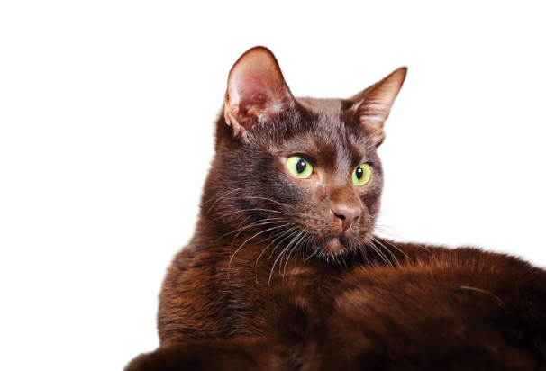
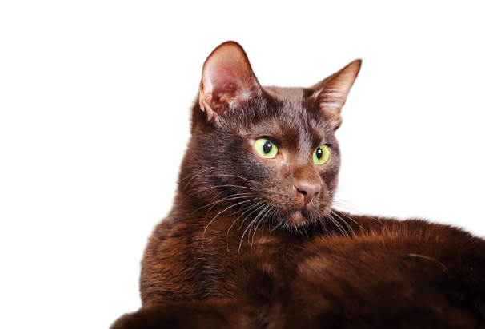

Whisker Wonders
A cat's whiskers are as wide as its body, helping them navigate tight spaces.
Communication
Cats use purrs, meows, and chirps to communicate with humans.
Toe Beans
The soft pads on a cat's paws are called "toe beans."
Ancient Pets
Cats were domesticated around 9,000 years ago in the Near East.
Purring Power
Cats purr to self-soothe and heal.
Unique Noseprints
Each cat's noseprint is unique, like a human fingerprint.
Curious Climbers
Cats have retractable claws for climbing and catching prey.
Night Vision
Cats have excellent night vision and can see in nearly total darkness.
Feline Flexibility
Cats are very flexible, with 230 to 250 bones in their bodies.
Tail Tales
A cat's tail helps with balance and communication.
 
